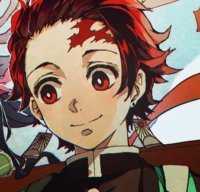
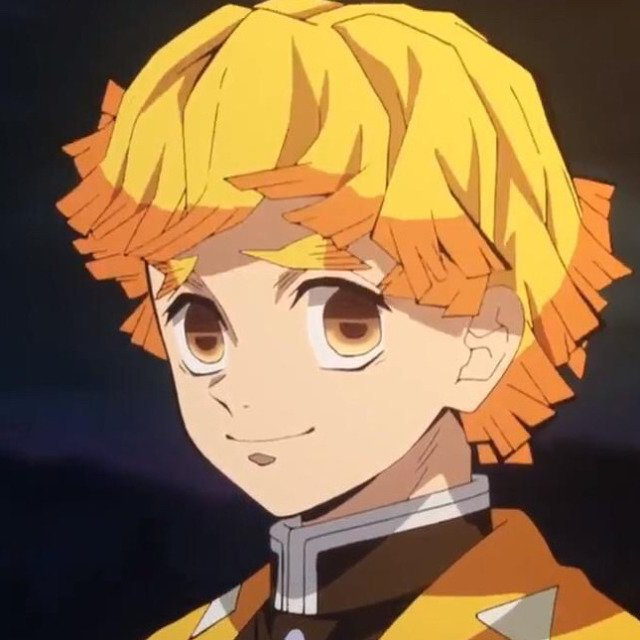
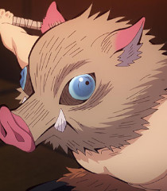
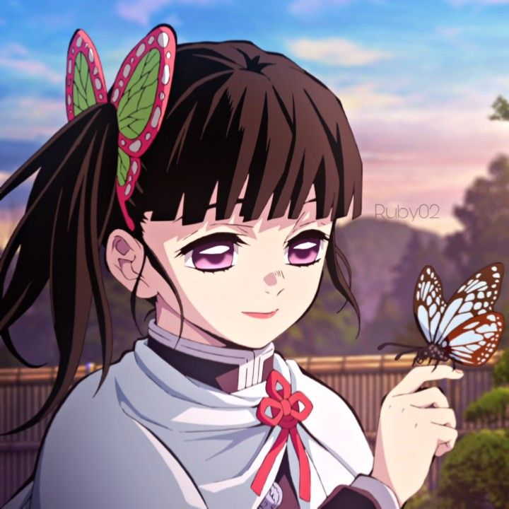

Kimetsu no Yaiba ("Lâmina aniquiladora de demônios"), é uma série japonesa de mangá shōnen escrita e ilustrada por Koyoharu Gotōge. O mangá é serializado desde 15 de fevereiro de 2016 na revista semanal Weekly Shōnen Jump, com seus capítulos sendo reunidos, até o momento, em 18 volumes tankōbon pela editora Shueisha. Uma adaptação da série para um anime de 26 episódios, produzida pelo estúdio ufotable, foi exibida entre 6 de abril e 28 de setembro de 2019.
Em setembro de 2019, foi divulgado que todos os volumes juntos da série já tinham excedido mais de 10 milhões de cópias vendidas. Em dezembro de 2019, o mangá já contava com mais de 25 milhões de cópias em circulação.
Enredo
Ambientada no Japão durante o Período Taishō, a história gira ao entorno de Tanjirō Kamado, um garoto bondoso e inteligente que vive junto com sua mãe e seus irmãos, ganhando dinheiro vendendo carvão, assim como seu falecido pai. Certo dia, ao voltar para casa após ter ido a uma cidade vender carvão, Tanjiro descobre que toda sua família fora atacada por demônios, sendo que uma de suas irmãs, Nezuko, é a única que sobreviveu ao ataque. Nezuko então passa a ser um demônio, mas ela surpreendentemente ainda demonstra sinais de emoções e pensamentos humanos. Tanjirō decide então se tornar um caçador de demônios, e com a ajuda de Nezuko, passa a sair em jornadas pelo Japão a fim de impedir que a mesma tragédia que afetou sua família aconteça com outras pessoas, enquanto que ele busca uma maneira de tornar Nezuko humana novamente.
Personagens Principais
Tanjirō Kamado
Voz original: Natsuki Hanae (enquanto adolescente), Satomi Satō (enquanto criança)
Tanjirō é o filho mais velho de um vendedor de carvão. Sua família inteira foi massacrada por um demônio enquanto ele vendia carvão numa cidade, com apenas sua irmã Nezuko sobrevivendo, porém se transformando em oni. Seu objetivo é encontrar uma cura para ela e transformá-la de volta em um humana, e é para esse fim que ele decide se juntar à Ki-satsutai ("Organização dos Aniquiladores de Demônios").
Inicialmente, Tanjirō treinou por cerca de dois anos com Urokodaki, aprendendo o estilo de batalha "Respiração da Água", e a aprimorando desde então. Posteriormente, Tanjirō começa a utilizar uma técnica ancestral de sua família, a Hinokami Kagura ("Dança do deus do fogo"), como uma forma mais poderosa de batalha, mas depois a fundiu com as técnicas de Respiração Aquática para criar um estilo de batalha mais eficiente. Seu crânio é extremamente duro, o que o permite utilizar sua cabeça para golpear oponentes. Tanjirō ainda possui um olfato extremamente aguçado, fazendo com que ele detecte a presença de demônios e até mesmo emoções de pessoas.
Ele é um garoto de bom coração e muitas vezes sente simpatia pelos demônios e suas vítimas. Seu otimismo sem fim e sua natureza simples geralmente fazem com que as pessoas gostem de sua companhia, mas, ao mesmo tempo, também o coloca em desacordo com outras pessoas. Tanjirō utiliza uma katana solar de cor preta.

Nezuko Kamado
Voz original: Akari Kitō
Nezuko é a irmã mais nova de Tanjirō. Ela estava com seus familiares quando foram atacados e mortos por um demônio. Só ela sobreviveu, mas o ataque a deixou transformada em um demônio também. No entanto, ao contrário dos outros demônios, Nezuko conseguiu manter de alguma forma a sua consciência anterior, o que lhe permitiu reconhecer Tanjirō como seu irmão e não machucá-lo. Uma técnica de hipinose de Urokodaki fez com que Nezuko passasse a ver todos os humanos como seus familiares, o que a ajudou a se tornar um demônio que não consome carne humana. Como alternativa a não comer carne humana, Nezuko se recupera de seus ferimentos através do sono.
Ela é incapaz de falar como um demônio, sendo obrigada a utilizar uma mordaça de bambu como precaução para não morder alguém. Assim como outros demônios, Nezuko é capaz de se regenerar, atacar com força sobre-humana e aumentar ou diminuir rapidamente o tamanho de seu corpo. Tanjirō geralmente a carrega em suas costas dentro de uma caixa de madeira feita por Urokodaki, pois a luz do sol certamente iria incinerá-la.
Zenitsu Agatsuma
Voz original: Hiro Shimono
Zenitsu é um garoto covarde e medroso que se juntou ao Ki-satsutai na mesma época que Tanjirō. Ele treinou e se especializou no estilo de batalha "Respiração do Trovão" através do seu avô, um hashira do trovão veterano; contudo, Zenitsu só foi capaz de aprender a primeira técnica (a Respiração do Trovão possui 6 técnicas) e, por causa disso, muitas vezes ele menospreza a si mesmo, apesar do fato de que ele é talentoso, pois sempre procurou aperfeiçoar ao máximo a primeira técnica. Zenitsu possui também uma excelente audição.
Ele se une a Tanjirō em uma missão e, desde então, ele passa a acompanhá-lo, em parte porque acha Nezuko bonita. Sua personalidade covarde inicialmente o atrapalha, e ele só é capaz de lutar quando está em situações de risco excepcionais; contudo, mais tarde ele aprende a afastar seus medos e agir quando necessário. Zenitsu utiliza uma katana solar de cor dourada.


Inosuke Hashibara
Voz original: Yoshitsugu Matsuoka
Um jovem garoto que foi criado por um javali selvagem, Inosuke utiliza um estilo autodidata chamado "Respiração das Feras", juntamente com duas espadas serrilhadas em batalha. Quando ele recebe novas espadas, ele propositadamente as tornam serrilhadas, a fim de combinar com sua preferência e estilo de luta. Ele é impetuoso e propenso a reagir violentamente e, embora pareça sombrio, provou-se um caçador hábil em batalhas repetidas vezes. Ele é extremamente musculoso e robusto, o que contrasta com o seu rosto estranhamente afeminado, que ele normalmente esconde sob a cabeça de um javali empalhado. Quando ele conhece Tanjirō, ele o trata como um inimigo por sua determinação em proteger Nezuko, um demônio; todavia, os dois rapidamente se tornam amigos e passam a batalharem juntos. Ele costuma desafiar Tanjirō para competições aceitas de bom humor. Ele fez o teste de admissão para o Ki-satsutai ao mesmo tempo que Tanjirō e Zenitsu e aparentemente foi o primeiro a concluí-lo. Suas katanas são cinza-violeta e ele utiliza seu apurado senso de tato para detectar inimigos à longas distâncias.
Kanao Tsuyuri
Voz original: Reina Ueda
Kanao é uma garota que realizou o teste de admissão para o Ki-satsutai junto com Tanjirō, Inosuke, Zenitsu e Genya. Oriunda de uma família que vivia em situação de miséria, Kanao sofria agressões físicas de seu próprio pai, que a vende como escrava para um desconhecido. Após ser resgatada por Shinobu e Kanae, Kanao se torna uma "tsuguko" da hashira do inseto, Shinobu, que a treina para sucedê-la. Em batalha, Kanao é uma espadachim altamente habilidosa e ágil, possuindo também um grande senso de visão.
Todavia, devido a sua infância violenta, Kanao passou a não demonstrar emoções e a não conversar como uma forma de amenizar a dor dos maus-tratos. Ela ainda possui dificuldade em realizar ações sem ser informada diretamente sobre o que fazer, motivo pelo qual Kanae lhe deu uma moeda, para ela realizar "cara ou coroa" sempre que for incapaz de tomar decisões. Após conhecer Tanjirō, este a incentiva a tomar decisões por ela mesma e a utilizar a moeda com menos frequência. Kanao utiliza uma katana solar de cor rosa.

Mídia
Mangá
Kimetsu no Yaiba
O mangá começou a ser serializado na 11ª edição de 2016 da revista Weekly Shonen Jump, publicada em 15 de fevereiro de 2016. O primeiro volume tankōbon da série, compilando os primeiros sete capítulos, foi publicado em 3 de junho de 2016. A partir de janeiro de 2019, a editora Shueisha começou a publicar simultaneamente a série em inglês através de sua plataforma digital Manga Plus.
Durante a Comic Con Expreience 2019, em São Paulo, a editora Panini anunciou a publicação do manga para o Brasil.
Kimetsu no Aima!
Uma paródia em mangá yonkoma baseada na série, escrita e ilustrada por Ryōji Hirano e intitulada Kimetsu no Aima!, é serializada através da plataforma digital Shonen Jump+ desde 7 de abril de 2019, com seus capítulos sendo publicados pós a estréia de cada episódio do anime, resumindo a história do mesmo episódio.
Kimetsu no Yaiba: Tomioka Giyū Gaiden
Uma segunda adaptação, servindo como um gaiden da série original, intitulada Kimetsu no Yaiba: Tomioka Giyū Gaiden, escrita por Gotōge e ilustrada por Hirano, foi serializada na 18ª edição anual da Weekly Shonen Jump, contando com dois capítulos focados num dos personagens da série, Giyū Tomioka.
Anime
Uma adaptação da série para um anime de 26 episódios, produzida pelo estúdio Ufotable, foi anunciada através da Weekly Shōnen Jump em 4 de junho de 2018. A série estreou em 6 de abril de 2019 nos canais Tokyo MX, GTV, GYT, BS11, dentre outros canais. Antes de ir ao ar, os cinco primeiros episódios do anime foram exibidos teatralmente no Japão por duas semanas, a partir de 29 de março de 2019, sob o título Kimetsu no Yaiba: Kyōdai no Kizuna.
Filme
Em 28 de setembro de 2019, imediatamente após o final do último episódio do anime, foi publicado um pequeno teaser anunciando um filme intitulado Kimetsu no Yaiba: Mugen Ressha-hen. A animação continuará a história original do mangá a partir do arco "Trem do Infinito", e estreará no Japão em 2020.